食べ方を伝える
ソースをつける、混ぜる、温かいうちに食べるなど、楽しみ方を伝える。
一言サービス
前菜は、食事の期待感をつくる。
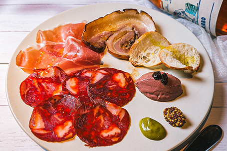
タパスは、SID / BTDの食事の始まりを楽しくする小皿料理です。
乾杯の一杯に合わせたり、ワインのお供として楽しんでいただいたり、
お客様の食事時間を豊かにする入口になります。
タパスは、スペインで親しまれている小皿料理です。
軽くつまめる冷菜から、揚げ物、温かい料理、ワインに合う一品まで、
食事の始まりを楽しくする役割があります。
SID / BTDでは、
スペインらしさを感じる料理に、
イタリアンの食材やDaiらしいアレンジを加えています。
タパスは、乾杯から食事の流れをつくる大切なカテゴリーです。
タパスをご提供するときは、
商品名を伝えるだけでなく、
「食べ方」「熱さ」「ソース」「香り」「ワインやビールとの相性」を一言添えます。
料理をただ置くだけでは、ブランド体験にはなりません。
お客様により商品の価値を感じていただくために、
商品知識と一言サービスをセットで届けます。
以下の4つを意識してください。
ソースをつける、混ぜる、温かいうちに食べるなど、楽しみ方を伝える。
鉄板や中が熱い商品は、必ず熱さを伝える。
食材、香り、スペインらしさ、Daiらしいアレンジを伝える。
ワイン、スパークリング、白ワイン、ビールなど、ドリンク提案につなげる。
提供時は「商品名」「絶対に言う一言」「価値が上がる一言」「カトラリー」「補足情報」をセットで確認します。
01
絶対に言う一言
「生ハムはハモンセラーノ、サラミはイベリコチョリソー、ポルケッタ、鶏白レバーのパテでございます。グリーンマスタードとマスタードピクルスをつけてお召し上がりください。」
付加価値が上がる一言
「それぞれ味わいが違うので、ワインと合わせながら少しずつ楽しんでいただけます。」
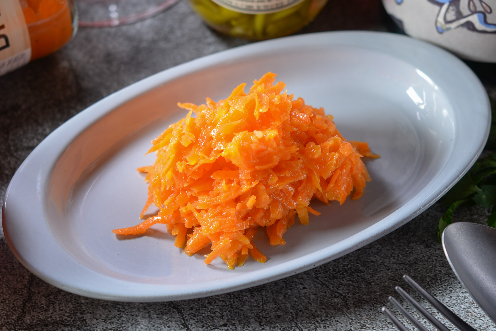
02
絶対に言う一言
「スペイン風の人参サラダ“ドンキのキャロットラペ”です。」
付加価値が上がる一言
「オレンジの香りを加えているので、爽やかで食欲をそそる冷菜です。白ワインやスパークリングワインとの相性も抜群です。『ドンキ・ホーテ』というスペインの冒険小説に出てくるレシピを再現しています。」
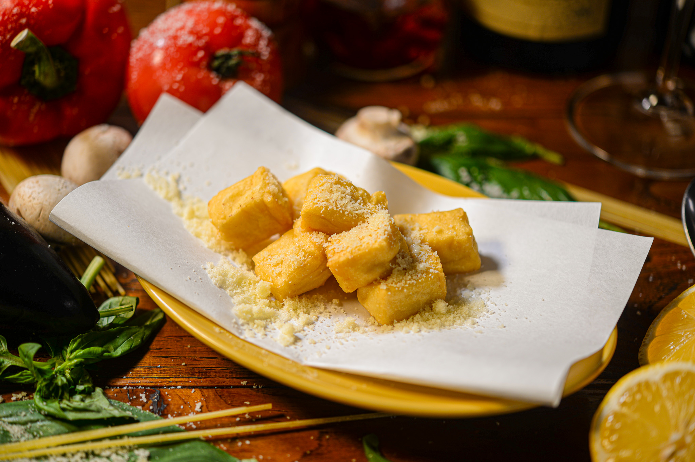
03
絶対に言う一言
「ぜひ温かいうちにお召し上がりください。」
付加価値が上がる一言
「滑らかに裏漉ししたひよこ豆を冷やし固めてサクッと揚げました。外はサクッと、中はトロッとした仕上がりになっています。」
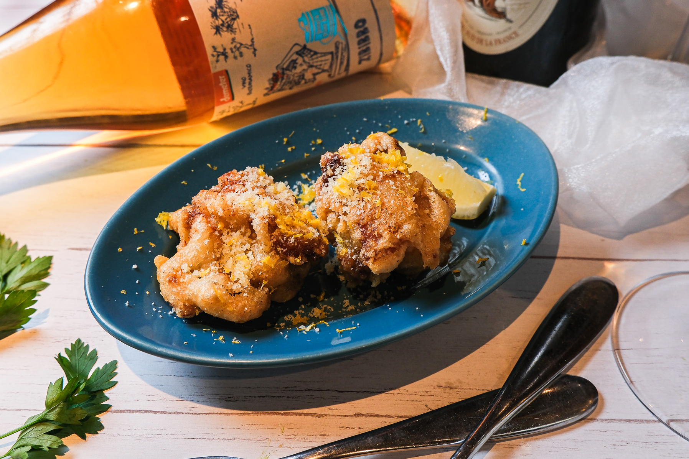
04
絶対に言う一言
「シチリア風鶏の唐揚げのポッロフリットです。お好みでレモンをつけてお召し上がりください。」
付加価値が上がる一言
「レモンとローズマリーでマリネした鶏もも肉を、チーズを加えた衣でさっくり揚げた、イタリア・シチリアの鶏の唐揚げです。」
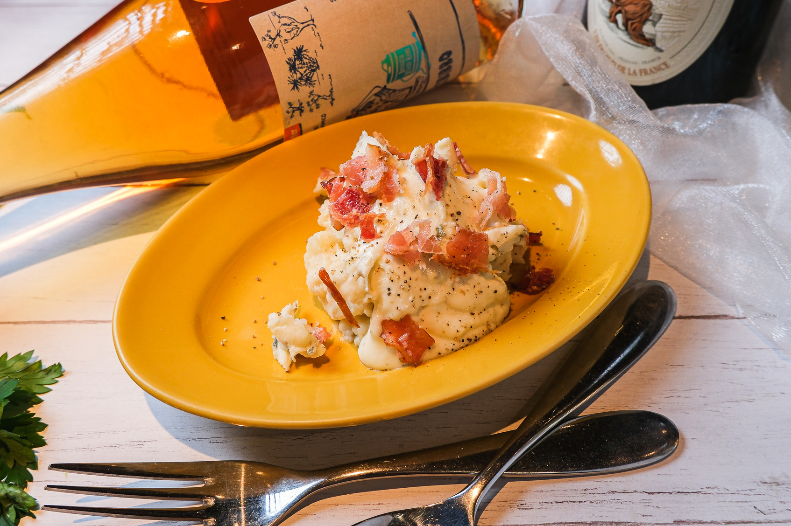
05
絶対に言う一言
「ゴルゴンゾーラの香りを楽しんでいただく、大人のポテトサラダです。」
付加価値が上がる一言
「ゴルゴンゾーラの香りとコクを効かせた、ワインにもよく合うポテトサラダです。」
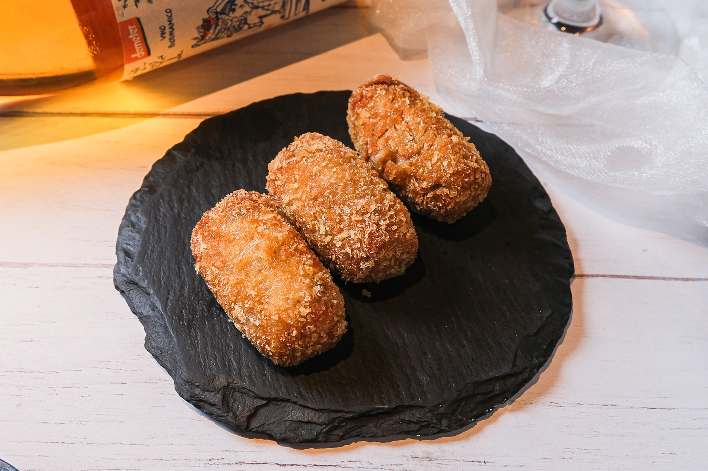
06
絶対に言う一言
「中が熱々で、トリュフの香りを楽しんでいただくクロケッタです。」
付加価値が上がる一言
「ベシャメルのなめらかさとトリュフの香りがしっかり広がる、ワインにも合う一品です。」
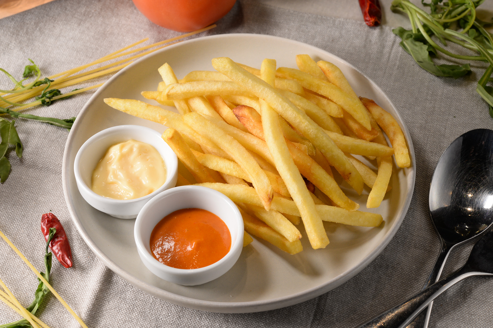
07
絶対に言う一言
「ブラバスという辛いソースとアンチョビアリオリソースをつけてお召し上がりください。」
付加価値が上がる一言
「ピリ辛トマトソースのブラバスと、アンチョビが効いたアリオリソースをつけてお召し上がりください。」
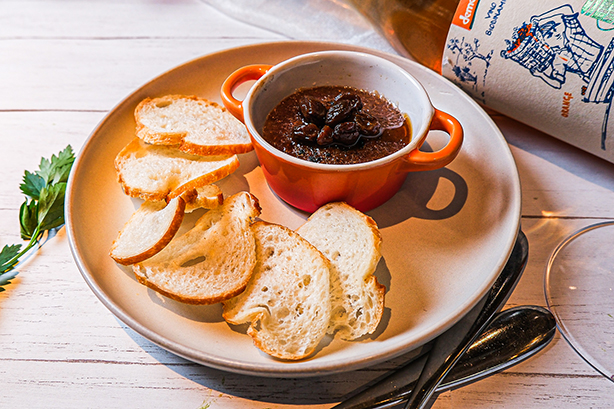
08
絶対に言う一言
「メルバトーストは1枚から追加注文いただけます。」
付加価値が上がる一言
「表面のカラメルを割って、マルサラに漬け込んだレーズンと一緒にメルバトーストに塗ってお召し上がりください。」
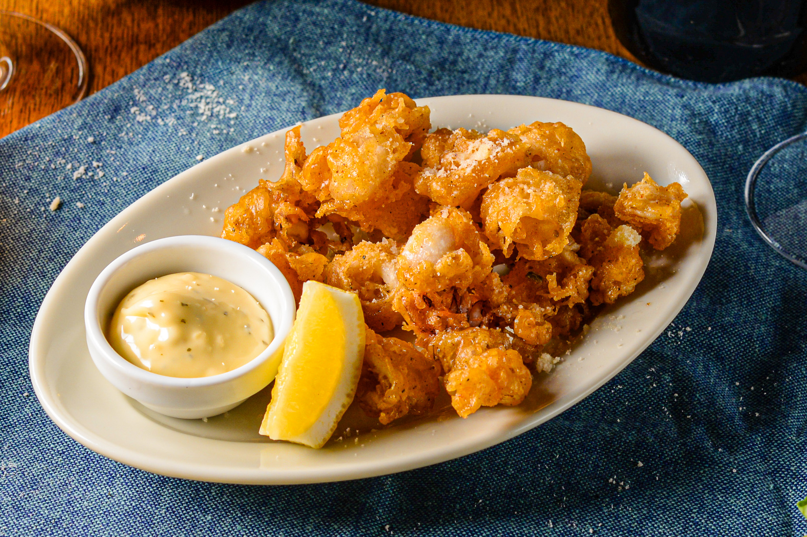
09
絶対に言う一言
「お好みで、タルタルソース、レモンをつけてお召し上がりください。」
付加価値が上がる一言
「衣はサクッと、中はふっくら柔らかく揚げています。レモンを絞るとさらに香りが立って、ビールにもぴったりです。」
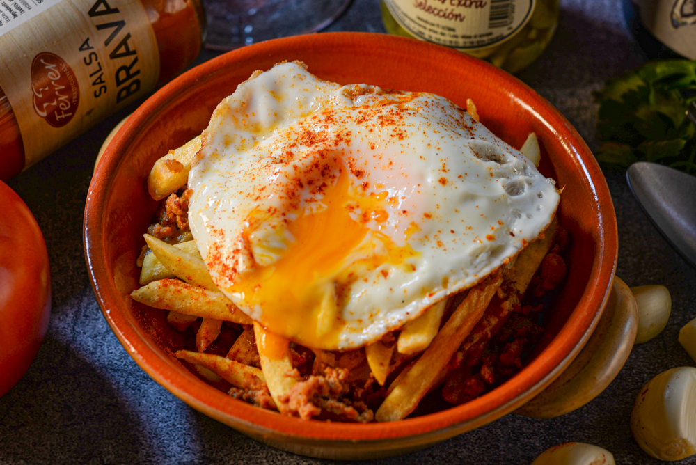
10
絶対に言う一言
「お好みで卵を崩して、全体を混ぜながらお召し上がりください。」
付加価値が上がる一言
「“エストレジャドス”は、スペインの定番卵料理で、ポテトフライと卵を一緒に焼き上げた、ボリュームのある一皿です。」
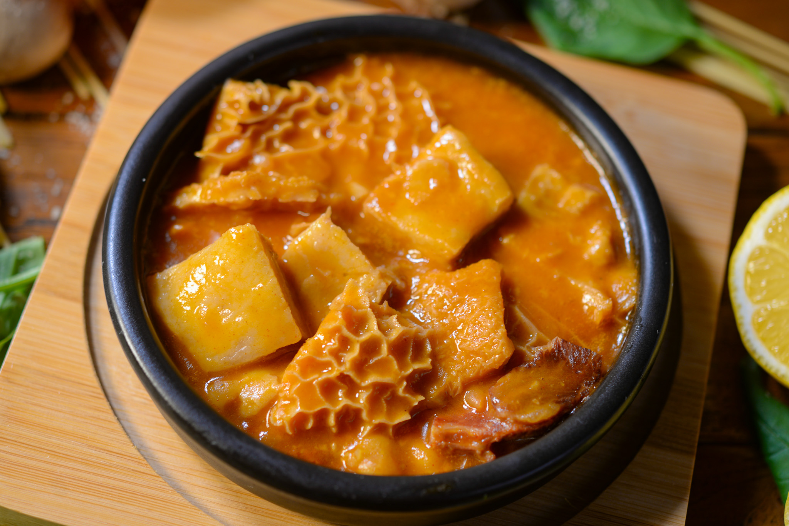
11
絶対に言う一言
「鉄板がお熱いのでお気をつけください。」
付加価値が上がる一言
「ハチノスや豚足などコラーゲンたっぷりの食材を使っているので、美容効果もあります。」
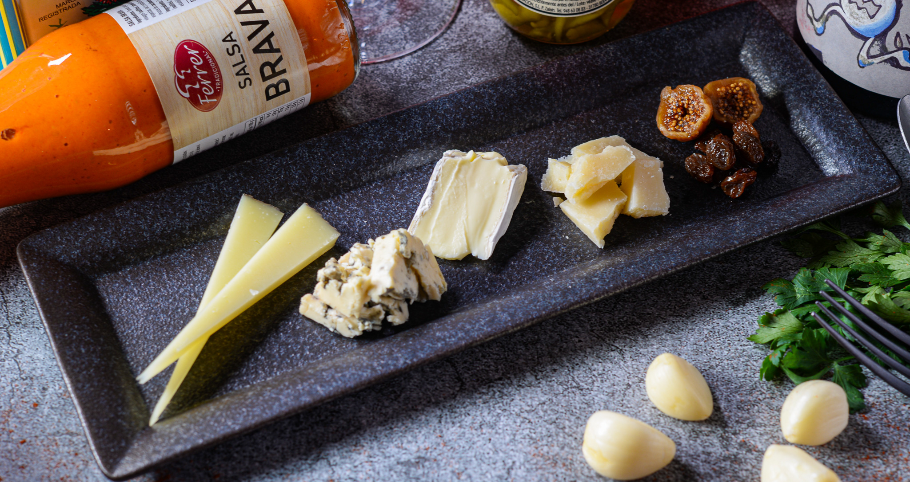
12
絶対に言う一言
「イタリアのグラナパダーノ、ゴルゴンゾーラ、フランスのブリー、スペインのマンチェゴでございます。マルサラで漬け込んだレーズンとイチジクと一緒にお召し上がりください。」
付加価値が上がる一言
「国ごとに味わいの違うチーズを楽しめる盛り合わせです。ワインと合わせて少しずつお楽しみください。」
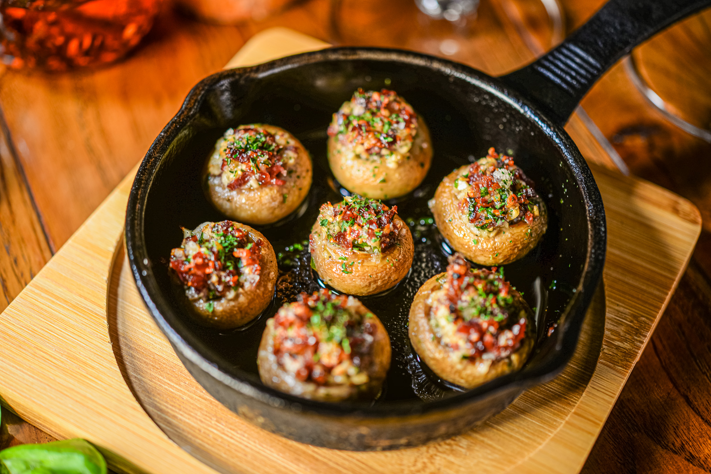
13
絶対に言う一言
「鉄板が大変熱いのでお気をつけてください。」
付加価値が上がる一言
「マッシュルームのくぼみに生ハムとイタリアンパセリ、マッシュルームを細かく刻んだものを詰めています。」
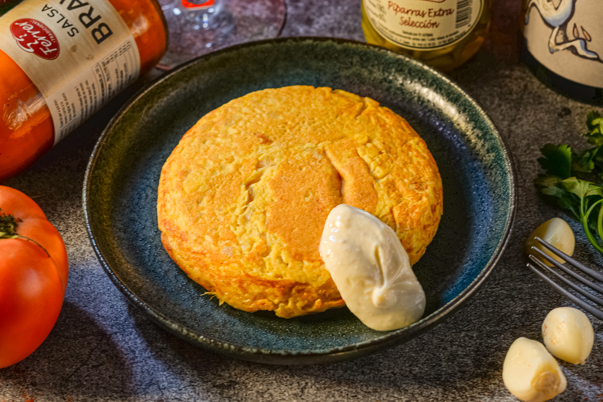
14
絶対に言う一言
「アンチョビを効かせたアリオリソースをのばしてお召し上がりください。」
付加価値が上がる一言
「スペイン風のオムレツで、オーダーをいただいてからふわっと半熟に焼き上げています。」
タパスは、乾杯から食事の流れを作る商品です。
提供時の一言で、お客様の期待感が上がります。
「こちら、ドンキのキャロットラペです。
オレンジの香りを加えているので、爽やかで食欲をそそる冷菜です。
白ワインやスパークリングとも相性が良いです。」
「こちら、トリュフクロケッタです。
中が熱々で、トリュフの香りを楽しんでいただくクロケッタです。
ワインにも合う一品です。」
「こちら、マッシュルームのオーブン焼きです。
鉄板が大変熱いのでお気をつけください。
マッシュルームのくぼみに生ハムとイタリアンパセリを詰めています。」
タパスは、SID / BTDの食事の始まりを楽しくする商品です。
冷菜、揚げ物、温かい料理、ワインに合う一皿まで、
お客様の乾杯から食事の流れを作る役割があります。
ただ提供するのではなく、
食べ方、熱さ、香り、ソース、ワインとの相性を伝えることで、
お客様により楽しい時間を届けることができます。
タパスは、最初の一言で食事の満足度が変わる。